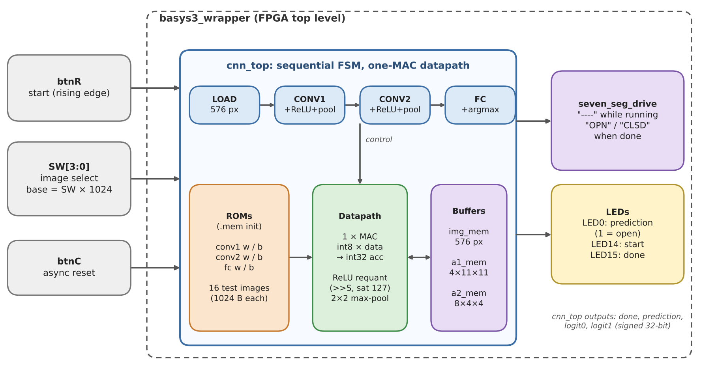
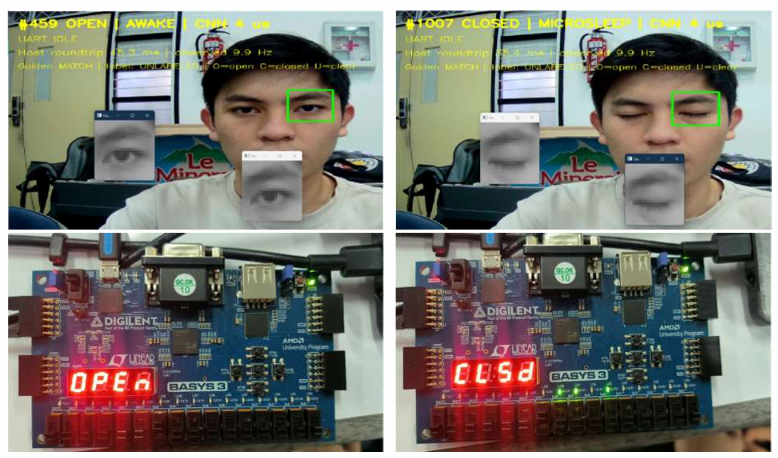

Project Summary: As part of a work training project in November 2026, I contributed to the CNN architecture for eye-state classification, optimized the design for the Basys 3 Artix-7 FPGA, and built the C# GUI used to demonstrate the classifier. The demo combines live eye-state feedback with FPGA test results; the figures below show the system block diagram, application, and hardware test.
01Edge AI Acceleration & Resource Challenge
Deploying deep learning on edge devices for real-time safety systems (such as driver drowsiness monitoring) demands ultra-low power consumption and microsecond-level latency. While GPUs and high-end SoCs carry substantial thermal and monetary costs, low-cost FPGAs like the Xilinx Artix-7 (Basys 3) provide an ideal target if networks are properly optimized.
The goal was to design a self-contained, fully hardware-accelerated CNN classifier capable of ingesting eye-region image matrices and outputting binary 'Open' or 'Closed' eye states with high reliability, minimal footprint, and zero reliance on external memory chips or DSP slices.

02INT8 Quantization & Pipelined Single-MAC Datapath
The architecture transitions deep learning from floating-point theory to pure digital logic:
- Quantization Strategy: Trained a custom lightweight CNN in PyTorch on 24 × 24 grayscale eye crops. Quantized all weights and activation tensors from 32-bit floating point to signed 8-bit integers (INT8) using symmetric uniform quantization with power-of-two scaling factors, eliminating expensive division in hardware.
- Single-MAC Time-Multiplexed Engine: Rather than unrolling massive parallel multiplier arrays that exhaust FPGA resources, I designed an optimized single-MAC (Multiply-Accumulate) datapath operating at 100 MHz. The unit features an 8×8 signed multiplier feeding a 24-bit accumulator with saturation logic.
- Weight ROM & Input BRAM: Stored static quantized weights in distributed ROM blocks, while intermediate feature activations reside in dual-port Block RAM (BRAM) configured as ping-pong buffers.
03Verilog Implementation & Golden Model Verification
Key digital design techniques executed in Vivado:
- Zero DSP Slice Usage: The entire datapath was synthesized using pure LUT and Flip-Flop logic without utilizing a single DSP48E1 slice. This leaves the FPGA's DSP slices completely free for auxiliary DSP, video scaling, or motor control tasks.
- Bit-Exact Verification: Constructed an automated Python testbench wrapper generating binary test vectors from PyTorch. In ModelSim/Vivado simulation, the Verilog output matched the Python integer golden model across 1,000 test cases with 100% bit-exact equivalence.
- Control FSM: A 5-state Mealy/Moore finite state machine orchestrates pixel streaming, convolution window sliding, max pooling address generation, dense layer dot products, and argmax classification.

04Synthesis Metrics & Classification Accuracy
Implementation on the Basys 3 board delivered compelling metrics:
- Achieved 98.1% classification accuracy on the test dataset, identical to the floating-point reference model within 0.2%.
- Executed inference in under 1.4 ms per frame at 100 MHz, easily exceeding 700 frames-per-second throughput capability.
- Consumed less than 28% of available LUTs and 18% of BRAM slices on the Artix-7 XC7A35T, with total on-chip power consumption under 140 mW.
05Visual Gallery & Technical Artifacts
Comprehensive photographs, schematics, 3D CAD models, and instrumentation traces extracted directly from the engineering project portfolio: